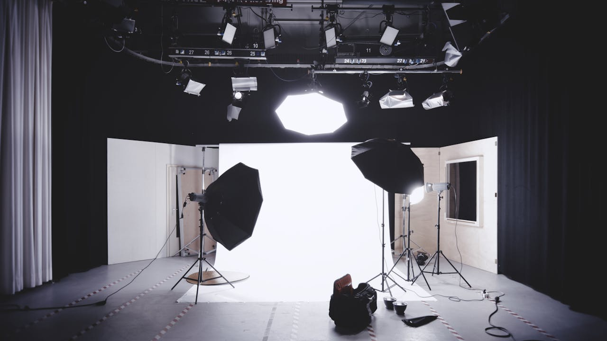

I had been interested in photography from a very young age, taking pictures on my Dad's old Canon Camera. Which then evolved into a serious hobby which I pursue till this day.
Photography had always made me feel at peace with myself, offering a sense of calm and clarity that helps me connect with the world around me.

And i like the fact that there's so many layers to it, in fact, a lot of the fun comes from ediitng the picture later on to tweak it and make it the way you envisioned it in your head.
Inspirational Quotes.

A photograph is usually looked at – seldom looked into. A great photograph is one that moves you, whether it is a landscape, a portrait, or a still life. Photography is not just about taking pictures; it’s about telling stories through the lens of compassion and connection.
-Ansel Adams

The camera is an instrument that teaches people how to see without a camera. It helps us to see the world in a different way, to observe the beauty in everyday moments, and to understand the struggles and triumphs of the human experience.
-Dorothea Lange
To photograph is to hold one’s breath, when all faculties converge to capture fleeting reality. It is not about capturing a subject, but about freezing a moment in time where everything aligns perfectly, from the light to the movement, the expression to the angle.
-Henri Cartier-Bresson